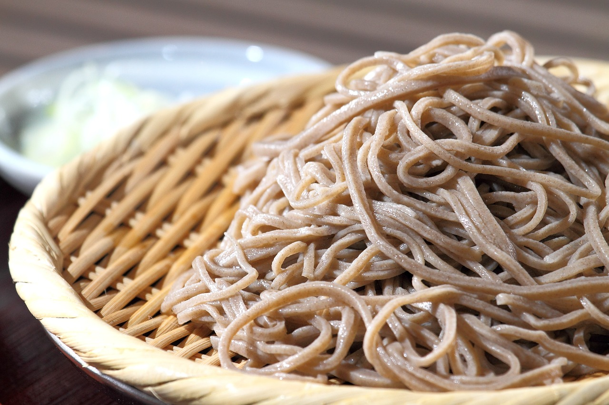

Top 10 Foods You Must Try in Japan
My personal list of unmissable culinary experiences.
Japan is famous for its cuisine, and it's impossible to list everything worth eating because it's ALL worth eating. But some foods are simply essential. This isn't a list of the fanciest foods, but a guide to some of the most delicious and memorable ones you can have here.
10. Shabu-Shabu
A hot pot where you swish thinly sliced meat and vegetables in a simmering broth. The broth is set in the centre of the table, a pot of one or two flavours, and it's great for groups. You cook everything yourself, dipping it in sauce. I recommend sesame sauce, but try them all. Ponzu is probably the most “Japanese,” but I’m not sure what I’m basing that on apart from feel. Most ShabuShabu restaurants are tabehodai (all-you-can-eat), so keep on ordering and get full!
9. Curry Rice (Kare Raisu)
Developed after the British Navy’s early 20th-century meals, Japanese curry is completely different from its Indian or Thai counterparts. It's thick, savoury, and often served over rice with a meat or a breaded pork cutlet (katsu curry). It's way better than it has any right to be, and a staple Japanese meal. It’s also quick, cheap, and filling. Chains like CoCo Ichibanya let you customize your spice level and toppings.
8. Karaage
This is Japanese fried chicken, and it's as awesome as all fried chicken. Chicken thigh marinated in soy sauce, ginger, and garlic, then deep-fried to crispy perfection. It's juicy on the inside, crunchy on the outside, and found everywhere from convenience stores to izakaya (Japanese pubs) and restaurants.
7. Unagi

Grilled freshwater eel. This is a delicacy and a bit more expensive, but it’s worth it (in fact, DON’T go for cheap Unagi if you find it, go for the real deal). The eel is grilled over charcoal, basted in a sweet and savoury soy-based sauce, and served over rice (unadon). It has a rich, smoky flavour and melts in your mouth. There’s even a whole day dedicated to eating it.
6. Gourmet Sushi
This is the sushi you see in media and your imagination, sitting at a counter, watching a master chef prepare each piece of nigiri by hand. The quality of the fish is high, and everything arranged to be traditional and aesthetically pleasing. It's the expensive version of sushi, but it's also culinary art and an important part of a Japan experience.
5. Kaiten Sushi (Conveyor Belt Sushi)

The cheap, delicious, easy, and better form of sushi. Order on a touch screen, then grab your plates as they go by on a conveyor belt. Chains like Hama Sushi, Sushiro, or Kura Sushi offer a huge variety of options, with most plates costing only around ¥110-¥200. They can be found everywhere, and are good for morning, afternoon, or evening.
4. Ramen

A Chinese dish made Japanese, and a national obsession. Every region has its own specialty, some better some worse, but all worth a try. Just look for the word ラーメン wherever you go. I recommend tonkotsu in winter, or miso ramen anytime. Shio (salt) and shoyu (soy sauce) ramen are also mainstays.
3. Soba and Udon
The other two pillars of the Japanese noodle world. Soba (thin buckwheat noodles) and Udon (thick wheat noodles) can be served hot in a savory broth or cold with a dipping sauce. They are simple and delicious. A cold bowl of zaru soba on a hot day is a great way to cool down.
2. Tempura

Battered and deep-fried seafood and vegetables. Tempura is light and crispy, not greasy. You can get it served over rice (tendon) or as a set meal (teishoku).
1. Tabehodai Yakiniku (All-You-Can-Eat BBQ)

All-you-can-eat meat. What is not to love? Select from a variety of meats, veg, and more. Raid the dessert bar afterwards then stagger home clutching your stomach and regretting every bite because you are so full. Then do it again.